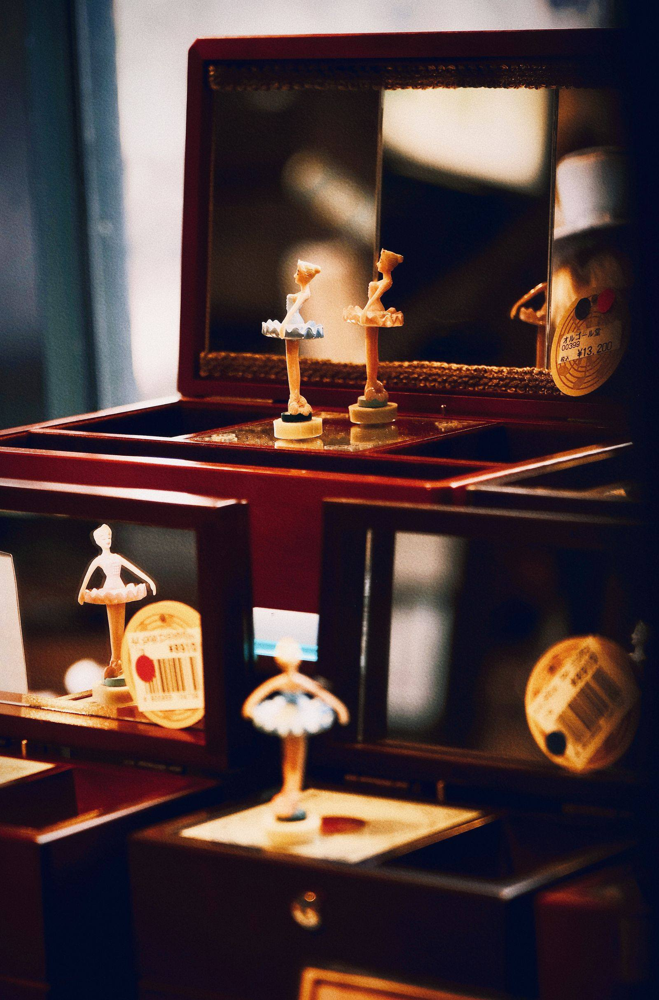

아이와 타이베이 여행, 체험·야시장·포장 식사 어떻게 할까?
아이 컨디션에 맞춰 움직이려면 — 예약이 필요한 체험과 붐비기 전 야시장 시간을 먼저 챙기세요.
게시
"아이가 야시장 인파를 힘들어할까 봐 걱정이에요." 아이와 타이베이 여행을 준비하는 부모들이 자주 하는 말이에요. 낮에는 예약제 체험으로 한두 시간을 채우고, 저녁 야시장은 일찍 들러 포장해 오는 식으로 짜면 훨씬 수월해요. 타이베이시 관광 사이트와 업체 안내, 실제 여행자들의 경험을 바탕으로 정리해봤어요.
01 · 아이와 타이베이 여행, 하루 흐름 예시
| 추천 활동 | 포인트 | |
|---|---|---|
| 오전 | 예약제 체험(펑리수 만들기 등) | 아이 집중력이 좋은 시간 |
| 오후 | 숙소 휴식 | 낮잠·더위 피하기 |
| 이른 저녁 | 야시장 들러 포장 | 붐비기 전에 둘러보기 |
| 저녁 | 숙소에서 식사 | 아이 컨디션 따라 일찍 마무리 |
02 · 예약이 필요한 체험
펑리수 만들기 궈위안이(郭元益) 스린 관광공장은 원린루 546호 4층, MRT 스린역 1번 출구 근처예요. 예약제이고 12세 미만 아이는 성인 1명과 아이 1명이 한 조인 부모·아이 코스로 신청해요. 동행인은 1명까지 더할 수 있고 현장에서 NT$180(동행·입장료, 만들기 체험 없음)을 내요. 수업은 정시에 시작해 20분 전까지 4층 매표소에서 체크인해야 하고, 늦으면 예약이 자동 취소돼요(2026년 9월 기준).
오르골 공방 오르골 만들기 체험은 업체마다 운영 방식이 달라요. 연령 제한과 소요 시간, 예약 여부를 미리 확인하세요.
체험은 하루 하나 이동과 대기를 생각하면 하루에 체험 한 가지가 적당해요.

03 · 야시장은 일찍, 포장해서
닝샤 야시장은 매일 17:00~23:30 열리고(2026년 9월 기준) 먹거리 노점 위주라 짧게 둘러보기 좋아요. 문을 연 직후인 5~6시쯤 가면 덜 붐벼 유모차나 어린아이와 다니기 수월해요. 아이가 지치기 전에 몇 가지를 포장해 숙소에서 먹는 가족도 많아요.
04 · 포장 식사 요령
국물은 뚜껑 있는 용기 국물 요리는 새지 않게 포장해 달라고 하세요.
물티슈·비닐봉지 숙소에서 먹을 때 정리가 편해요.
맵지 않은 메뉴 처음 먹는 음식은 아이 입맛에 맞는지 조금만 사서 맛보세요.
"체험은 오전, 야시장은 문 열 때, 저녁은 숙소에서." — 아이와 타이베이를 다녀온 부모들의 조언을 요약했습니다.
아이와 갈 곳은 타이베이 가볼 만한 곳에 모아 두었어요. 사진 속 라오허제 야시장도 등록돼 있고, 낮에 뛰어놀 곳으로는 타이페이 어린이공원이 있어요. 숙소 주변 식당은 타이베이 맛집 지도에서 볼 수 있어요.
지도에서 타이베이 체험·명소를 찾아보세요
아이와 들르기 좋은 타이베이 명소와 야시장을 지도에서 확인해보세요.